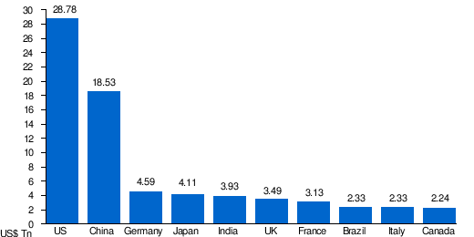

List of countries by GDP (nominal)

|
| Largest economies in the world by GDP (nominal) in 2024 according to International Monetary Fund estimates[n 1][1] |
.svg){kind=link}
| > $20 trillion $10–20 trillion $5–10 trillion $1–5 trillion | $750 billion – $1 trillion $500–750 billion $250–500 billion $100–250 billion | $50–100 billion $25–50 billion $5–25 billion < $5 billion |
Gross domestic product (GDP) is the market value of all final goods and services from a nation in a given year.[2] Countries are sorted by nominal GDP estimates from financial and statistical institutions, which are calculated at market or government official exchange rates. Nominal GDP does not take into account differences in the cost of living in different countries, and the results can vary greatly from one year to another based on fluctuations in the exchange rates of the country's currency.[3] Such fluctuations may change a country's ranking from one year to the next, even though they often make little or no difference in the standard of living of its population.[4]
Comparisons of national wealth are also frequently made based on purchasing power parity (PPP), to adjust for differences in the cost of living in different countries. Other metrics, nominal GDP per capita and a corresponding GDP (PPP) per capita are used for comparing national standard of living. On the whole, PPP per capita figures are less spread than nominal GDP per capita figures.[5]
The rankings of national economies over time have changed considerably; the United States surpassed the British Empire's output around 1916,[6] which in turn had surpassed the Qing dynasty in aggregate output decades earlier.[7][8] Since China's transition to a socialist market economy through controlled privatisation and deregulation,[9][10] the country has seen its ranking increase from ninth in 1978, to second in 2010; China's economic growth accelerated during this period and its share of global nominal GDP surged from 2% in 1980 to 18% in 2021.[8][1][11] Among others, India has also experienced an economic boom since the implementation of economic liberalisation in the early 1990s.[12]
The first list includes estimates compiled by the International Monetary Fund's World Economic Outlook, the second list shows the World Bank's data, and the third list includes data compiled by the United Nations Statistics Division. The IMF's definitive data for the past year and estimates for the current year are published twice a year in April and October. Non-sovereign entities (the world, continents, and some dependent territories) and states with limited international recognition (such as Kosovo and Taiwan) are included in the list where they appear in the sources.
Table
The table initially ranks each IMF member including sovereign states not part of the IMF, non-sovereign states and territories, and countries with limited recognition
The links in the "Country/Territory" row of the following table link to the article on the GDP or the economy of the respective country or territory.
| Country/Territory | IMF[1][13] | World Bank[14] | United Nations[15] | |||
|---|---|---|---|---|---|---|
| Forecast | Year | Estimate | Year | Estimate | Year | |
| World | 109,529,216 | 2024 | 105,435,540 | 2023 | 100,834,796 | 2022 |
| 28,781,083 | 2024 | 27,360,935 | 2023 | 25,744,100 | 2022 | |
| 18,532,633 | [n 1]2024 | 17,794,782 | [n 3]2023 | 17,963,170 | [n 1]2022 | |
| 4,591,100 | 2024 | 4,456,081 | 2023 | 4,076,923 | 2022 | |
| 4,110,452 | 2024 | 4,212,945 | 2023 | 4,232,173 | 2022 | |
| 3,937,011 | 2024 | 3,549,919 | 2023 | 3,465,541 | 2022 | |
| 3,495,261 | 2024 | 3,340,032 | 2023 | 3,089,072 | 2022 | |
| 3,130,014 | 2024 | 3,030,904 | 2023 | 2,775,316 | 2022 | |
| 2,331,391 | 2024 | 2,173,666 | 2023 | 1,920,095 | 2022 | |
| 2,328,028 | 2024 | 2,254,851 | 2023 | 2,046,952 | 2022 | |
| 2,242,182 | 2024 | 2,140,086 | 2023 | 2,137,939 | 2022 | |
| 2,056,844 | 2024 | 2,021,421 | 2023 | 2,240,422 | 2022 | |
| 2,017,025 | 2024 | 1,788,887 | 2023 | 1,463,323 | 2022 | |
| 1,790,348 | 2024 | 1,723,827 | 2023 | 1,776,577 | 2022 | |
| 1,760,947 | 2024 | 1,712,793 | 2023 | 1,673,916 | 2022 | |
| 1,647,114 | 2024 | 1,580,695 | 2023 | 1,415,874 | 2022 | |
| 1,475,690 | 2024 | 1,371,171 | 2023 | 1,319,100 | 2022 | |
| 1,142,513 | 2024 | 1,118,125 | 2023 | 1,008,027 | 2022 | |
| 1,113,561 | 2024 | 1,108,022 | 2023 | 907,118 | 2022 | |
| 1,106,015 | 2024 | 1,067,583 | 2023 | 1,108,148 | 2022 | |
| 938,458 | 2024 | 884,940 | 2023 | 818,426 | 2022 | |
| 844,623 | 2024 | 811,229 | 2023 | 688,125 | 2022 | |
| 802,958 | [n 4]2024 | — | — | |||
| 655,192 | 2024 | 632,217 | 2023 | 582,643 | 2022 | |
| 623,048 | 2024 | 593,268 | 2023 | 591,188 | 2022 | |
| 604,260 | 2024 | 640,591 | 2023 | 631,133 | 2022 | |
| 564,020 | 2024 | 545,629 | 2023 | 532,415 | 2022 | |
| 548,890 | 2024 | 514,945 | 2023 | 495,340 | 2022 | |
| 540,887 | 2024 | 516,034 | 2023 | 470,302 | 2022 | |
| 530,664 | 2024 | 509,902 | 2023 | 525,002 | 2022 | |
| 527,796 | 2024 | 504,173 | 2023 | 507,063 | 2022 | |
| 526,951 | 2024 | 485,513 | 2023 | 579,422 | 2022 | |
| 525,228 | 2024 | 501,428 | 2023 | 466,788 | 2022 | |
| 471,516 | 2024 | 437,146 | 2023 | 404,284 | 2022 | |
| 465,814 | 2024 | 429,717 | 2023 | 408,802 | 2022 | |
| 464,181 | 2024 | 401,505 | 2023 | 398,047 | 2022 | |
| 455,162 | 2024 | 437,415 | 2023 | 432,677 | 2022 | |
| 445,519 | 2024 | 399,649 | 2023 | 406,305 | 2022 | |
| 409,989 | 2024 | 404,199 | 2023 | 400,167 | 2022 | |
| 406,775 | [n 5]2024 | 382,055 | 2023 | 359,838 | 2022 | |
| 386,076 | 2024 | 363,540 | 2023 | 343,939 | 2022 | |
| 373,233 | 2024 | 377,782 | 2023 | 405,270 | 2022 | |
| 369,971 | 2024 | 351,003 | 2023 | 300,690 | 2022 | |
| 347,594 | 2024 | 395,926 | 2023 | 409,306 | 2022 | |
| 338,237 | 2023 | 338,368 | 2023 | 326,796 | 2022 | |
| 333,760 | 2024 | 335,533 | 2023 | 300,686 | 2022 | |
| 325,880 | 2024 | 330,858 | 2023 | 290,527 | 2022 | |
| 308,055 | 2024 | 300,187 | 2023 | 282,511 | 2022 | |
| 298,949 | 2024 | 287,080 | 2023 | 254,849 | 2022 | |
| 296,740 | 2024 | 261,421 | 2023 | 225,496 | 2022 | |
| 282,458 | 2024 | 267,603 | 2023 | 242,631 | 2022 | |
| 266,780 | 2024 | 239,899 | 2023 | 191,912 | 2022 | |
| 265,894 | 2024 | 250,843 | 2023 | 264,182 | 2022 | |
| 257,625 | 2024 | 253,466 | 2023 | 245,845 | 2022 | |
| 252,738 | 2024 | 362,815 | 2023 | 475,058 | 2022 | |
| 250,276 | 2024 | 238,206 | 2023 | 217,285 | 2022 | |
| 244,686 | 2024 | 235,770 | 2022 | 237,101 | 2022 | |
| 223,413 | 2024 | 212,389 | 2023 | 177,337 | 2022 | |
| 205,130 | 2024 | 163,698 | 2023 | 118,971 | 2022 | |
| 188,943 | [n 6]2024 | 178,757 | [n 6]2023 | 160,502 | [n 6]2022 | |
| 160,397 | 2024 | 161,772 | 2023 | 175,363 | 2022 | |
| 152,377 | 2024 | 141,109 | 2023 | 130,912 | [n 7]2022 | |
| — | — | 147,193 | 2022 | |||
| 140,808 | 2024 | 132,794 | 2023 | 115,304 | 2022 | |
| 127,356 | 2024 | 121,444 | 2023 | 113,537 | 2022 | |
| 121,592 | 2024 | 118,845 | 2023 | 115,049 | 2022 | |
| 117,763 | 2024 | 117,902 | 2023 | 113,434 | 2022 | |
| 110,035 | 2024 | 102,050 | 2023 | 95,003 | 2022 | |
| 108,927 | 2024 | 108,192 | 2023 | 114,666 | 2022 | |
| 107,933 | 2024 | 101,584 | 2023 | 90,213 | 2022 | |
| 104,001 | 2024 | 107,441 | 2023 | 113,419 | 2022 | |
| 102,328 | 2024 | — | 129,313 | 2022 | ||
| 97,956 | 2024 | 90,889 | 2023 | 80,391 | 2022 | |
| 96,058 | 2024 | 86,498 | 2023 | 68,380 | 2022 | |
| 92,123 | 2024 | 84,773 | 2023 | 113,304 | 2022 | |
| 88,556 | 2024 | 85,755 | 2023 | 81,530 | 2022 | |
| 88,076 | 2024 | 82,689 | 2023 | 71,552 | 2022 | |
| 87,347 | 2024 | 83,382 | 2023 | 76,522 | 2022 | |
| 86,911 | 2024 | 78,789 | 2023 | 70,018 | 2022 | |
| 82,605 | 2024 | 77,241 | 2023 | 71,171 | 2022 | |
| 81,896 | 2024 | 59,887 | 2023 | 67,009 | 2022 | |
| 81,873 | 2024 | 75,187 | 2023 | 63,563 | 2022 | |
| 81,170 | 2024 | 77,836 | 2023 | 70,878 | 2022 | |
| 79,605 | 2024 | 79,158 | 2023 | 73,535 | [n 8]2022 | |
| 78,749 | 2024 | 72,356 | 2023 | 78,721 | 2022 | |
| 75,244 | 2024 | 76,370 | 2023 | 73,766 | 2022 | |
| 74,846 | 2022 | 84,357 | 2023 | 76,187 | 2022 | |
| 73,761 | 2024 | 66,383 | 2023 | 62,551 | 2022 | |
| 72,101 | 2024 | 68,217 | 2023 | 59,981 | 2022 | |
| 69,048 | 2024 | 71,857 | 2023 | 72,873 | 2022 | |
| 68,006 | 2024 | 64,815 | 2023 | 65,211 | 2022 | |
| 56,310 | 2024 | 49,273 | 2023 | 48,243 | 2022 | |
| 54,708 | 2024 | 48,530 | 2023 | 46,181 | 2022 | |
| 54,677 | [n 9]2024 | 47,062 | 2023 | 24,042 | 2022 | |
| 53,570 | 2024 | 50,814 | 2023 | 47,452 | 2022 | |
| 53,205 | 2024 | 47,946 | 2023 | 44,341 | 2022 | |
| 49,334 | 2024 | 45,850 | 2023 | 44,008 | 2022 | |
| 48,221 | 2024 | 50,492 | 2023 | 40,537 | 2022 | |
| 46,790 | 2024 | 43,205 | 2023 | 44,382 | 2022 | |
| 45,817 | 2024 | 42,956 | 2023 | 41,722 | 2022 | |
| 45,466 | 2024 | 43,627 | 2023 | 40,876 | 2022 | |
| 45,150 | 2024 | 31,773 | 2023 | 29,504 | 2022 | |
| 44,179 | 2024 | 40,908 | 2023 | 39,406 | 2022 | |
| 43,486 | 2024 | 40,745 | 2023 | 38,049 | 2022 | |
| 37,355 | 2024 | 34,401 | 2023 | 31,717 | 2022 | |
| 35,450 | 2024 | 31,014 | 2023 | 27,775 | 2022 | |
| 35,333 | 2024 | 34,016 | 2023 | 32,488 | 2022 | |
| 34,405 | 2024 | 26,538 | 2023 | 26,418 | 2022 | |
| 34,221 | [n 10]2024 | 32,230 | [n 10]2023 | 29,210 | [n 10]2022 | |
| 33,338 | 2024 | 31,020 | 2023 | 28,064 | 2022 | |
| 32,865 | [n 11]2024 | 30,536 | [n 11]2023 | 24,605 | [n 11]2022 | |
| 31,716 | 2024 | 30,933 | 2022 | 31,609 | 2022 | |
| 29,872 | 2024 | 28,163 | 2023 | 29,136 | 2022 | |
| 29,078 | 2024 | 27,055 | 2023 | 24,473 | 2022 | |
| 28,365 | 2024 | 28,140 | 2023 | 30,053 | 2022 | |
| 26,865 | 2024 | 109,327 | 2023 | 36,729 | 2022 | |
| 25,447 | 2024 | 23,612 | 2023 | 20,846 | 2022 | |
| 25,431 | 2024 | 22,978 | 2023 | 18,916 | 2022 | |
| 25,408 | 2024 | 24,212 | 2023 | 19,513 | 2022 | |
| 24,046 | 2024 | 19,851 | 2023 | 18,751 | 2022 | |
| 22,975 | 2024 | 20,625 | 2023 | 18,406 | 2022 | |
| 22,737 | 2024 | 20,957 | 2023 | 18,100 | 2022 | |
| 21,943 | 2024 | 19,872 | 2023 | 17,146 | 2022 | |
| 21,902 | 2024 | 20,325 | 2023 | 19,176 | 2022 | |
| 21,780 | 2022 | 17,937 | 2023 | 39,303 | 2022 | |
| 21,662 | 2024 | 20,905 | 2023 | 18,827 | 2022 | |
| 21,418 | 2024 | 19,396 | 2023 | 20,352 | 2022 | |
| 21,371 | 2024 | 19,673 | 2023 | 17,396 | 2022 | |
| 21,178 | 2024 | 16,786 | 2023 | 14,718 | 2022 | |
| 21,013 | 2024 | 20,516 | 2023 | 20,132 | 2022 | |
| 20,098 | 2024 | 19,423 | 2023 | 17,097 | 2022 | |
| 18,829 | 2024 | 17,829 | 2023 | 15,671 | 2022 | |
| 18,816 | 2024 | 16,819 | 2023 | 15,414 | 2022 | |
| 18,697 | 2024 | 13,149 | 2023 | 16,799 | 2022 | |
| 18,602 | [n 12]2023 | 17,396 | [n 12]2023 | 19,111 | [n 13]2022 | |
| 18,356 | [n 14]2024 | 16,539 | [n 14]2023 | 14,510 | [n 14]2022 | |
| 16,940 | 2024 | — | 11,007 | 2022 | ||
| 16,465 | 2024 | 16,032 | 2023 | 14,954 | 2022 | |
| 16,359 | 2024 | 14,397 | 2023 | 12,898 | 2022 | |
| 15,873 | 2024 | 14,761 | 2023 | 13,711 | 2022 | |
| 15,510 | 2024 | 15,128 | 2023 | 16,681 | 2022 | |
| 15,501 | 2024 | 15,321 | 2023 | 15,344 | 2022 | |
| 15,190 | 2024 | 15,843 | 2023 | 15,362 | 2022 | |
| — | — | 15,176 | 2022 | |||
| 14,467 | 2022 | 14,502 | 2022 | 14,174 | 2022 | |
| 14,390 | 2024 | 14,339 | 2023 | 12,897 | 2022 | |
| 13,701 | 2024 | 14,098 | 2023 | 13,312 | 2022 | |
| 13,599 | 2024 | 13,988 | 2023 | 10,930 | 2022 | |
| 12,953 | 2024 | 12,061 | 2023 | 10,492 | 2022 | |
| 12,804 | 2024 | 11,680 | 2023 | 10,420 | 2022 | |
| 12,765 | 2024 | 12,351 | 2023 | 12,607 | 2022 | |
| 11,318 | 2024 | 10,438 | 2023 | 9,397 | 2022 | |
| 11,241 | 2024 | 14,084 | 2023 | 12,558 | 2022 | |
| 10,708 | 2024 | 12,117 | 2023 | 11,767 | 2022 | |
| 10,628 | 2024 | 10,453 | 2023 | 10,997 | 2022 | |
| 9,832 | 2024 | 9,171 | 2023 | 8,087 | 2022 | |
| New Caledonia | — | 9,623 | 2022 | 9,623 | 2022 | |
| — | 8,980 | 2021 | 18,595 | 2022 | ||
| — | 8,784 | 2022 | 8,772 | 2022 | ||
| 8,010 | 2024 | 7,405 | 2023 | 6,229 | 2022 | |
| — | 7,365 | 2022 | 7,757 | 2022 | ||
| — | 7,828 | 2022 | 7,546 | 2022 | ||
| 7,199 | 2024 | 6,600 | 2023 | 6,170 | 2022 | |
| 6,863 | 2024 | 6,394 | 2023 | 5,699 | 2022 | |
| — | 6,601 | 2022 | 6,281 | 2022 | ||
| 6,517 | 2024 | — | 4,616 | 2022 | ||
| — | 5,815 | 2022 | 5,814 | 2022 | ||
| 5,801 | 2024 | 5,495 | 2023 | 4,979 | 2022 | |
| 5,085 | 2024 | 4,598 | 2023 | 4,326 | 2022 | |
| 4,754 | 2024 | 4,332 | 2023 | 3,265 | 2022 | |
| 4,558 | 2024 | 3,810 | 2023 | 3,481 | 2022 | |
| 4,364 | 2024 | 4,099 | 2023 | 4,003 | 2022 | |
| 4,337 | 2024 | 3,782 | 2023 | 3,620 | 2022 | |
| 4,069 | 2024 | 3,545 | 2022 | 3,544 | 2022 | |
| 3,897 | 2024 | 3,728 | 2023 | 3,376 | 2022 | |
| 3,296 | 2024 | 3,282 | 2023 | 2,830 | 2022 | |
| — | 3,236 | 2021 | 2,926 | 2022 | ||
| 3,110 | 2024 | 2,898 | 2022 | 2,898 | 2022 | |
| — | 3,074 | 2022 | 3,075 | 2022 | ||
| 3,075 | 2024 | 2,642 | 2023 | 4,032 | 2022 | |
| 2,810 | 2024 | 2,555 | 2023 | 2,395 | 2022 | |
| 2,718 | 2024 | 2,587 | 2023 | 2,314 | 2022 | |
| 2,694 | 2024 | 2,340 | 2023 | 2,231 | 2022 | |
| 2,582 | 2024 | 2,520 | 2023 | 2,165 | 2022 | |
| 2,395 | 2024 | 2,046 | 2023 | 2,287 | 2022 | |
| — | — | 2,383 | 2022 | |||
| — | — | 2,361 | 2022 | |||
| 2,203 | 2024 | 2,141 | 2023 | 1,994 | 2022 | |
| 2,151 | 2024 | 1,966 | 2023 | 1,574 | 2022 | |
| 2,127 | 2024 | 2,033 | 2023 | 1,770 | 2022 | |
| 2,033 | 2024 | 1,855 | 2021 | 1,780 | 2022 | |
| 1,992 | 2024 | 2,243 | 2023 | 3,204 | 2022 | |
| 1,707 | 2024 | 1,631 | 2023 | 1,597 | 2022 | |
| — | 1,623 | 2023 | 1,572 | 2022 | ||
| 1,422 | 2024 | 1,352 | 2023 | 1,246 | 2022 | |
| 1,406 | 2024 | 1,320 | 2023 | 1,192 | 2022 | |
| — | 1,402 | 2023 | 1,138 | 2022 | ||
| 1,289 | 2024 | 1,126 | 2023 | 985 | 2022 | |
| 1,134 | 2024 | 1,077 | 2023 | 979 | 2022 | |
| 1,128 | 2024 | 1,066 | 2023 | 946 | 2022 | |
| 1,024 | 2024 | 934 | 2023 | 857 | 2022 | |
| 751 | 2024 | 603 | 2023 | 546 | 2022 | |
| 708 | 2024 | 654 | 2023 | 612 | 2022 | |
| 581 | 2024 | 500 | 2022 | 488 | 2022 | |
| 484 | 2024 | 460 | 2023 | 427 | 2022 | |
| 311 | 2024 | 279 | 2023 | 223 | 2022 | |
| 308 | 2024 | 263 | 2023 | 225 | 2022 | |
| 305 | 2024 | 284 | 2023 | 279 | 2022 | |
| 161 | 2024 | 154 | 2023 | 147 | 2022 | |
| 66 | 2024 | 62 | 2023 | 59 | 2022 | |
See also
Countries:
- List of countries by GDP (nominal) per capita
- List of countries by GDP (PPP)
- List of countries by GDP (PPP) per capita
- List of countries by past and projected GDP (nominal)
- List of countries by past and projected GDP (PPP)
Other entities:
- List of cities by GDP
- List of continents by GDP
- Largest country subdivisions by GDP
- List of regions by past GDP (PPP)
- Trade bloc § Statistics
Notes
- ^ a b c Figures for China exclude Taiwan, and the special administrative regions of Hong Kong and Macau.
- ^ Based on the best available GDP figure for each country at the time of creation (16 June 2024). Best available GDP figure was defined as the latest available figure from the International Monetary Fund (including forecasts for the current year), otherwise the latest available figure from the World Bank, otherwise the latest available figure from the United Nations Statistics Division; however, countries that didn't have any figure for a year more recent than 2019 were not included at all. For almost all countries, the latest IMF forecast figure for 2024 was used.
- ^ Figures exclude the special administrative regions of Hong Kong and Macau.
- ^ The name used in the IMF report is "Taiwan Province of China".
- ^ The name used in the IMF report is "Hong Kong SAR".
- ^ a b c Figures exclude the Autonomous Republic of Crimea and Sevastopol.
- ^ Includes Western Sahara
- ^ The UN figure excludes the autonomous region of Zanzibar.
- ^ The name used in the IMF report is "Macao SAR".
- ^ a b c Data are for the area controlled by the Government of the Republic of Cyprus.
- ^ a b c Excludes Abkhazia and South Ossetia
- ^ a b The name used in the IMF and World Bank reports is "West Bank and Gaza".
- ^ The name used by the UN is "State of Palestine".
- ^ a b c Excludes data for Transnistria
References
- ^ a b c "World Economic Outlook Database, April 2024". IMF.org. International Monetary Fund. 16 April 2024. Retrieved 16 April 2024.
- ^ "What is GDP and why is it so important?". Investopedia. IAC/InterActiveCorp. 26 February 2009. Archived from the original on 23 May 2016. Retrieved 23 May 2016.
- ^ Moffatt, Mike. "A Beginner's Guide to Purchasing Power Parity Theory". About.com. IAC/InterActiveCorp. Archived from the original on 1 March 2017. Retrieved 31 May 2014.
- ^ Ito, Takatoshi; Isard, Peter; Symansky, Steven (January 1999). "Economic Growth and Real Exchange Rate: An Overview of the Balassa-Samuelson Hypothesis in Asia" (PDF). Changes in Exchange Rates in Rapidly Development Countries: Theory, Practice, and Policy Issues. National Bureau of Economic Research. Archived (PDF) from the original on 28 March 2016. Retrieved 23 May 2016.
- ^ Callen, Tim (28 March 2012). "Gross Domestic Product: An Economy's All". Finance & Development. International Monetary Fund. Archived from the original on 11 December 2021. Retrieved 31 May 2014.
- ^ Frum, David (24 December 2014). "The Real Story of How America Became an Economic Superpower". The Atlantic. Archived from the original on 16 February 2022. Retrieved 16 February 2022.
- ^ Matthews, Chris (5 October 2014). "5 Most Powerful Economic Empires of All Time". Fortune. Time, Inc. Archived from the original on 16 August 2016. Retrieved 23 May 2016.
- ^ a b Kroeber, Arthur R. (2016). China's Economy: What Everyone Needs to Know. New York, United States: Oxford University Press. ISBN 9780190239053. Archived from the original on 5 February 2021. Retrieved 28 May 2016.
- ^ Kau, Michael Ying-mao (30 September 1993). China in the Era of Deng Xiaoping: A Decade of Reform. Studies on Contemporary China. Taylor & Francis. ISBN 9781563242786. Archived from the original on 5 February 2021. Retrieved 23 May 2016.
- ^ Hu, Zuliu; Khan, Mohsin S. (April 1997). "Why Is China Growing So Fast?" (PDF). Economic Issues. International Monetary Fund. Archived (PDF) from the original on 16 April 2016. Retrieved 26 May 2016.
- ^ "China GDP growth slows as population crisis, Covid-19 cloud economic outlook". South China Morning Post. 18 January 2022. Archived from the original on 5 December 2022. Retrieved 12 August 2022.
- ^ Rodrik, Dani; et al. (March 2004). "From "Hindu Growth" to Productivity Surge: The Mystery of the Indian Growth Transition" (PDF). National Bureau of Economic Research. Archived (PDF) from the original on 27 March 2016. Retrieved 23 March 2016.
- ^ "WEO Database, April 2024. Report for Selected Countries and Subjects: World, European Union". IMF.org. International Monetary Fund. 16 April 2024. Retrieved 16 April 2024.
- ^ "GDP (current US$)". data.worldbank.org. Archived from the original on 13 June 2024. Retrieved 13 June 2024.
- ^ "United Nations Statistics Division - National Accounts". unstats.un.org. Archived from the original on 13 June 2024. Retrieved 13 June 2024.
Economic classification of countries | |||||
|---|---|---|---|---|---|
| Three/Four-World Model | |||||
| Gross domestic product (GDP) |
| ||||
| Gross national income (GNI) | |||||
| Wages | |||||
| Wealth | |||||
| Other national accounts | |||||
| Human development | |||||
| Digital divide | |||||
| Net international investment position (NIIP) | |||||